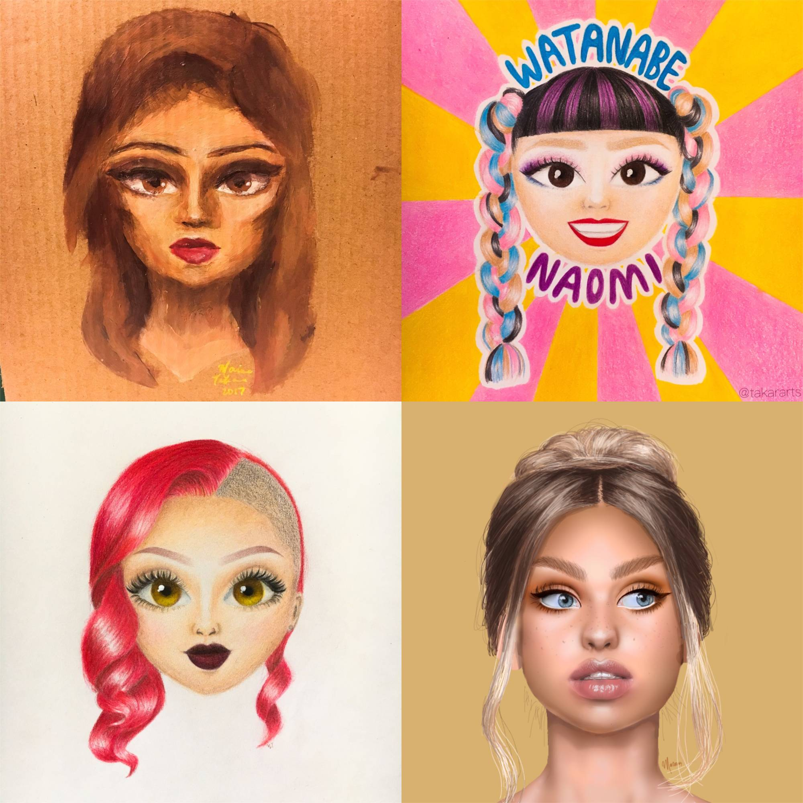
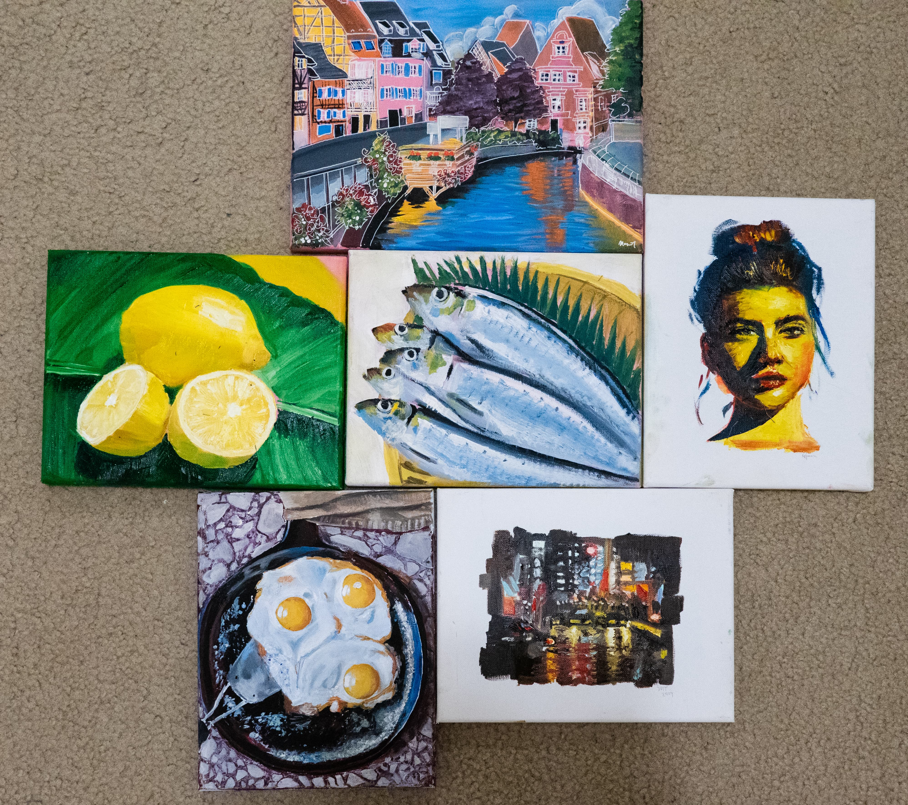
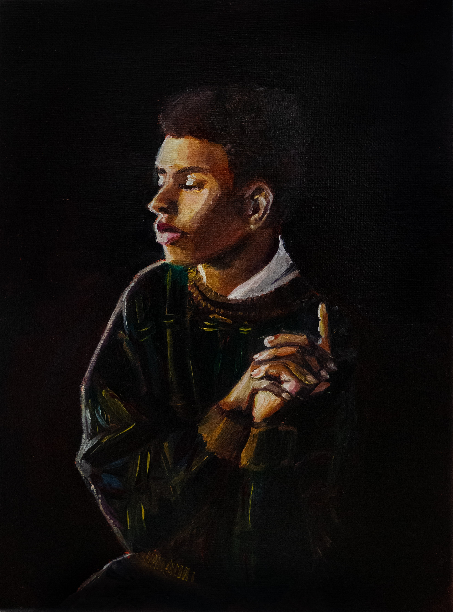
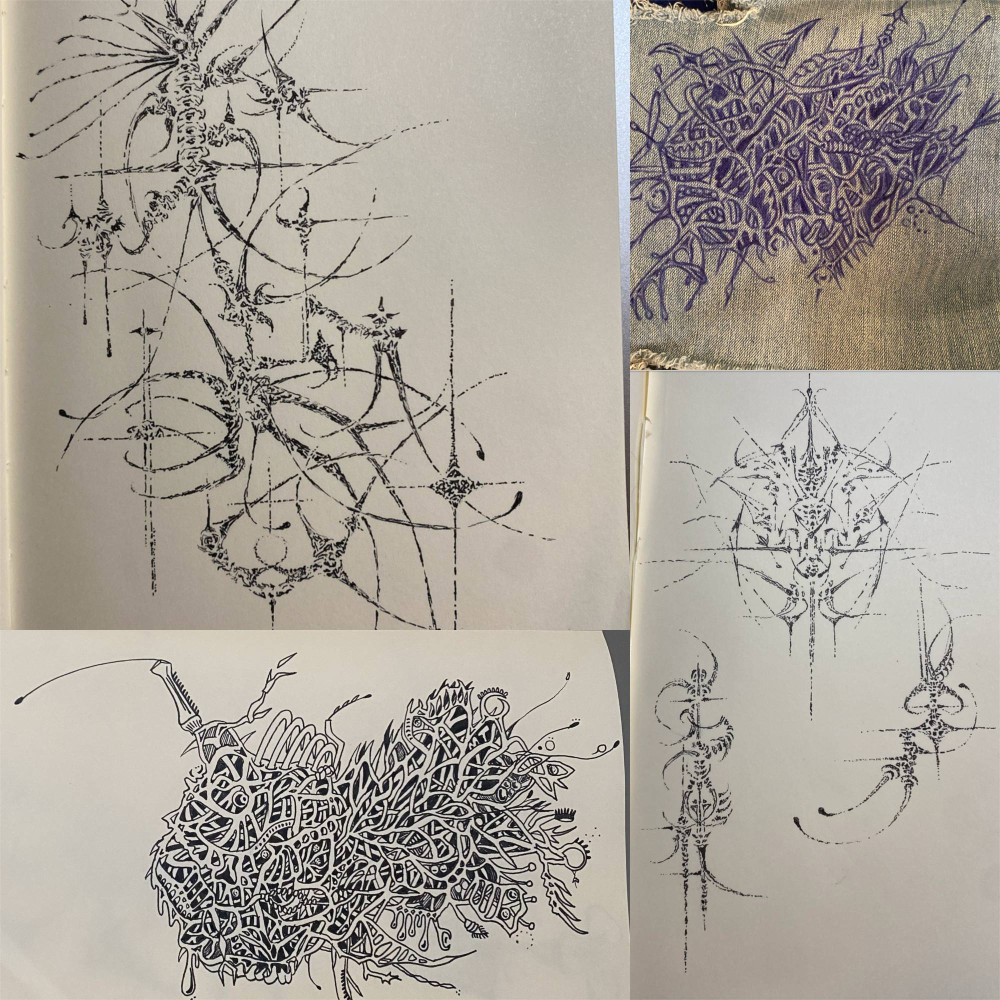

1. Maybe a quick introduction first?
Hello. My name is Marina, and I like making art. Lately, I've been exploring several themes: first, the use of technology in art, both as a medium and as a platform for archives (and what is the difference?), and second, the relationship between light and shadow-focused art in Europe and America vs the line- centered art from Japan, and how this reflects the cultural beliefs of each nation, from the binary Christianity of the European and American countries to Shintoism and cram culture in Japan.
This site is my way of tracking my progress and the things that I deemed to be worthy of my artistic expression at various stages of my life. I think that it will be interesting to see how I've changed over the past two decades of my life... but I guess we will find out!
2. Who run the world?  As we all do (?), I started with drawing girls. I was in this phase for quite a long time (and to be honest, I still enjoy it from time to time), and you can see that I was really loving the front and center, cuteness-focused portrait style of drawing, simply because I could focus on drawing the cutest girls possible. I think that these range from elementary and junior high school, with the bottom right one being the most recent done in my first or second year of high school. I was really pleased with these at the time because art was a way for me to draw pretty things and confirm that I can control a pencil, paintbrush, or stylus at my will.
I started getting a little bored after a few years since I was not really changing anything about the pieces other than my subject matter, so I was eager to explore what other things I could draw.
3. ...or paint.  A pivotal point of my life was when I received oil paints from an anonymous donor (my dad) and I was introduced to the world of painting. Of course, I had painted before, but it was all kind of minor stuff, but now, I was prepared to create Masterpieces. I was still in junior high/high school at this time, and I had a lot of free time, so I was creating at a pretty high pace, but I never had enough canvases, so I always painted over an existing canvas to create more space for the new visions in my head.
I really liked these paintings, but as mentioned before, I wasn't particularly attached to any of them since I was creating them under the impression that I would be painting over them at a later date. But it still kind of sucked when I gave some of them to my boyfriend at the time, who then turned into a crazy stalker ex after we broke up.
 This is another painting that I did (titled "Chicken or beef") , and while I liked how it turned out, I was frustrated with the level of detail that I was unable to get because of the thickness of both the oil paint and my cheap brush that I was using. Rather than spending time developing my oil paint skills or investing in a new brush, I decided to go a different route for my next fixation on art.
4. Into the digital world.
 This piece was the first piece I did digitally
(other than the girl at the bottom right in section 2,
which I'm pretty sure I did with my fingers on my phone
so it doesn't count), and I used a drawing tablet with a
stylus attached to my computer along with Adobe Photoshop.
My goal was to see exactly how much detail I could get
through a digital artscape, and I was pleased to discover
that there was hardly a limit. The red line was added at
the very end after several people told me that they thought
they were just looking at a black and white photograph.
This piece was the first piece I did digitally
(other than the girl at the bottom right in section 2,
which I'm pretty sure I did with my fingers on my phone
so it doesn't count), and I used a drawing tablet with a
stylus attached to my computer along with Adobe Photoshop.
My goal was to see exactly how much detail I could get
through a digital artscape, and I was pleased to discover
that there was hardly a limit. The red line was added at
the very end after several people told me that they thought
they were just looking at a black and white photograph.
With this piece, I was still using art as a way to fine-tune my core skills - how close can I get my end result to look like the reference picture I found on Pinterest? But after its completion, I felt rather satisfied with that, and started thinking about where I could go with art in the future.
After that piece, there's a pause in my visual art production for about a year for two reasons: first, I was creating fashion pieces because I was thinking of pursuing a fashion degree in college, and second, that was the final piece in my visual art portfolio I was going to send to colleges, so I was feeling a little burnt out. Art is really the best when you're doing it for yourself.
5. Go explore some lines.  Coinciding with my search for artistic expression outside of realism, I started researching the emergence of mycology in Japan from the late 19th to early 20th century. This sounds fancy, but all it means is that I looked at a bunch of articles about mushrooms and fungi, and this really fueled my interest in "gross" looking things, a stark contrast to the beauty-centered art I was previously creating. I also started getting into non-flat canvases, which is just a nice, parent-friendly way of saying that I got into tattoos. Dear family, if you're reading this, I have no tattoos.
Although I was less pleased with the final outcome of these pieces, I really enjoyed the fact that they allowed me to explore a new artistic venue, especially the exploration of lines as the focal form. Growing up in America, I never fully realized the extent of light and shadow I always implemented into my works, but over this period, I started to recognize the line-focused art created in Japan and its stark contrast with foreign art.
6. Finger. I was tired of the commitment of sitting down with the intent to create a masterpiece, so I got into drawing on my phone.